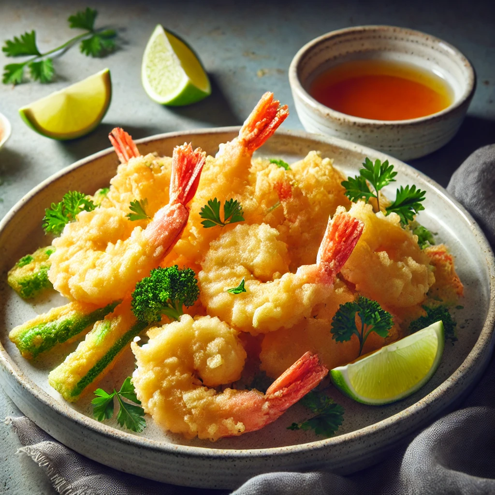

THE BUSTY MERMAID

Tidal Wave Tempura
Ingredienser og Oppskrift:
Velkommen til Tidal Wave Tempura – en rett som treffer deg som en bølge av smak! Denne delikate og sprø retten er fylt med deilige skatter fra havet, perfekt til å nytes mens du ser på solnedgangen over bølgene.
Så, hva går denne fristelsen ut på? Her er oppskriften på hvordan du lager ditt eget tempura-mesterverk:
- 200g **reker** (som er fanget fra de dypeste, mest eventyrlige havene)
- 200g **grønnsaker** (for den perfekte balansen mellom sjømat og landets herlighet)
- 1 kopp **tempuramel** (for den ekstra sprø teksturen som får deg til å føle deg som en ekte sjømatseiler)
- 1 kopp **iskaldt vann** (vann så kaldt som en sjøbris, for å gi den perfekte sprø teksturen)
- 1 klype **havsalt** (fra det samme havet som tempuraen kommer fra)
Hvordan lage denne retten:
- Bland tempuramel og isvann for å lage den sprø røren.
- Dyp de friske rekene og grønnsakene i røren og fritér dem til de er gyldne og sprø.
- Legg dem på et fat, og server med en liten skål soyasaus for dyping.
- Skål og nyt bølgen av smak som vasker over deg!
OBS: Denne retten har magiske egenskaper og kan få deg til å tro du er på en tropisk øy, selv om du sitter hjemme i stua!